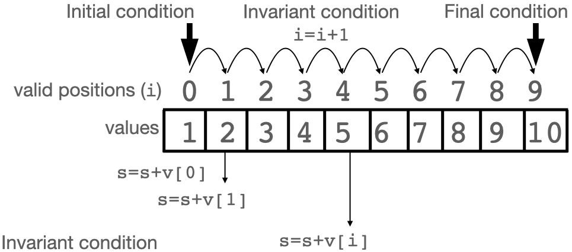
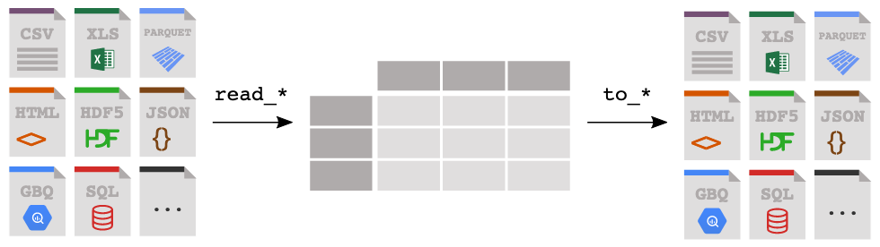
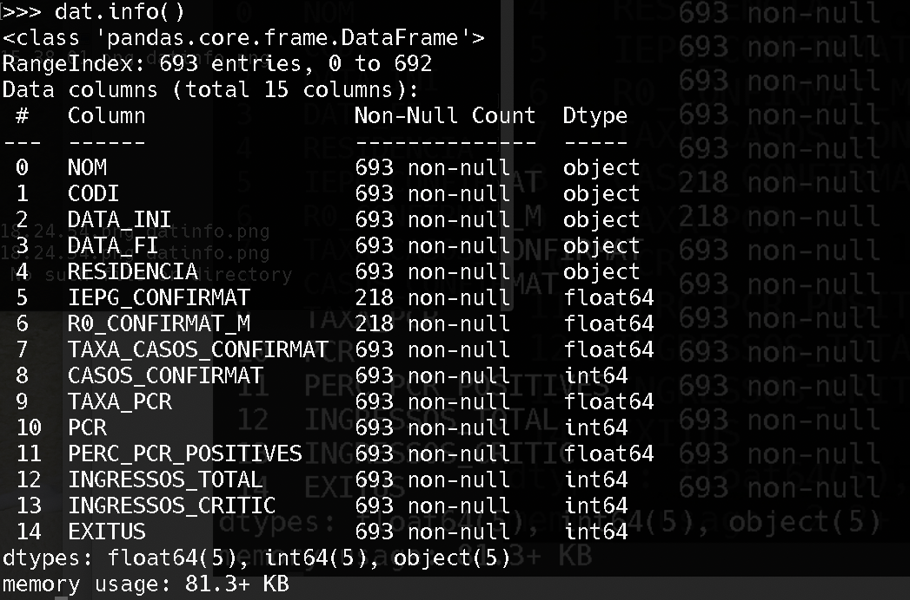
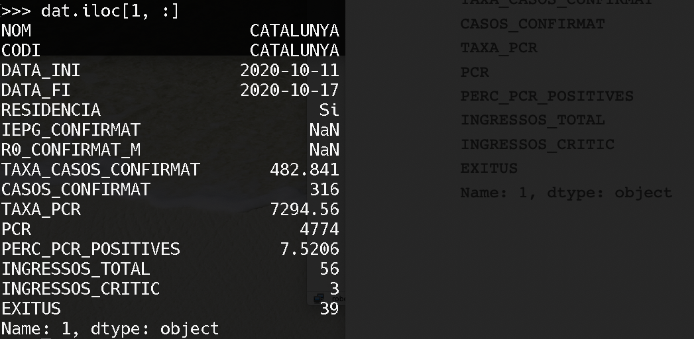

class: title-slide, center, middle # Programming with Python (2) ## Robert Castelo ### Dept. of Experimental and Health Sciences ### Universitat Pompeu Fabra .footnote[[robert.castelo@upf.edu](mailto:robert.castelo@upf.edu)] ## Fundamentals of Computational Biology ### BSc on Human Biology ### UPF School of Health and Life Sciences ### Academic Year 2020-2021 --- ## Vectors * A vector, or [array](https://en.wikipedia.org/wiki/Array_data_structure) is a type of object (variable) that can store more than one single value and allows for an indexed access to its values. * We can set a literal vector into a Python variable using an assignment: ``` v = [1, 2, 3, 4, 5] ``` * We can access its values by referring to one of its **valid positions** in the vector. * Given a vector with $n$ elements, the **valid positions** of a vector in Python (and in many other programming languages) go from 0 to $n-1$, that is, positions follow a [zero-based numbering](https://en.wikipedia.org/wiki/Zero-based_numbering).  .footer[ Image adapted from [Comp 101 Arrays: Overview](https://comp101.org/topics/arrays/arrays-overview). ] --- ## Vectors * Given the vector: ``` v = [1, 2, 3, 4, 5] ``` * To access the values of `v` using one of its **valid positions**, we will use the notation `v[i]`, where `i` is a **valid position**, for instance: ``` print(v[0]) v[0]+v[1] i=4 v[i] v[i-1] ``` * Vectors are containers for sequences of values contiguous in memory. * Vectors in programming are analogous to vectors in [mathematics](https://en.wikipedia.org/wiki/Vector_%28mathematics_and_physics%29). * Filling up vectors with values enables re-using algorithms that operate on the vector space. This requires looping over valid positions of a vector. --- ## Looping over valid positions * Using an iterative statement, we generate a sequence of valid positions of vector that enable looping over valid positions and consequently the access to their associated values. .left-column[ <pre> v = [1, 2, 3, 4, 5, 6, 7, 8, 9, 10] i = 0 s = 0 while (i < 10) : s = s + v[i] i = i + 1 print(s) </pre> ] .right-column[ <br> <br> <br>  ] --- ## Looping over valid positions * Assume we have in the vector `v` a DNA sequence and we want to count how many nucleotides `T` we have in this sequence. <pre> v = ['A', 'T', 'T', 'G', 'C', 'C', 'T', 'A'] i = 0 n = 0 while (i < 8) : if (v[i] == 'T') : n = n + 1 i = i + 1 print("there are %d nucleotides T" %(n)) </pre> --- ## Compound conditionals * Let's say we want to count the number of dinucleotides `TT` in the DNA sequence. This requires comparing two consecutive positions in the vector, both of which should have the nucleotide `T`. * We can always implement a more complex logic by nesting [conditional statements](https://en.wikipedia.org/wiki/Conditional_%28computer_programming%29). However, we can write more compact code with compound conditionals using [logical operators](https://en.wikipedia.org/wiki/Logical_connective). * In Python we have the following three logical operators: | Operator | Type | Description | |-------------------- | -------------- | ------------------------------| | _cond1_ `and` _cond2_ | conjunction | True if both operands are true| | _cond1_ `or` _cond2_ | disjunction | True if either operand is true| | `not` _cond_ | negation | True if operand is false | * Here _cond_, _cond1_ and _cond2_ refer to logical conditions such as: ``` a == 2 v[i] eq 'T' i < 10 ``` --- ## Compound conditionals * We can implement the Python program that counts dinucleotides `TT` as follows: <pre> v = ['A', 'T', 'T', 'G', 'C', 'C', 'T', 'A'] i = 1 n = 0 while (i < 8) : if (v[i] == 'T' and v[i-1] == 'T') : n = n + 1 i = i + 1 print("there are %d dinucleotides TT" %(n)) </pre> --- ## Concluding remarks (vectors) * Vectors allow one to store multiple values in a single variable. * Values in a vector are accessed by their position in the vector. * Valid positions in a vector in Python start at 0 and consequently end at the number of elements minus one. * Looping over valid positions enables developing algorithms that can be re-used by replacing the values of the vector. --- ## Python built-in data types * What we have called _vectors_ so far are technically called _lists_ in Python. * A _list_ in Python may contain values of different types: ``` v = [4, 3.2, "Hello World!", True] ``` * A _list_ in Python is one of the _built-in_ data types, concretely those that can be classified as _sequence data types_: * `list` ``` v = [4, 3.2, 'Hello World!', True] ## mutable, can change ``` * `tuple`: (4, 3.2, 'Hello World!', True) ``` v = (4, 3.2, 'Hello World!', True) ## immutable, cannot change ``` * `range`: range(5) ``` v = range(5) ## sequence of integer numbers from 0 to 5 ``` --- ## Python built-in data types * The whole collection of Python [built-in data types](https://docs.python.org/3/library/stdtypes.html) is: * Text sequence type: `str` * Numeric types: `int`, `float`, `complex` * Sequence types: `list`, `tuple`, `range` * Mapping type: `dict` * Set types: `set`, `frozenset` * Boolean type: `bool` * Binary types: `bytes`, `bytearray`, `memoryview` * We can figure out the data type of a Python object using the function `type()`: ``` >>> type("Hello World!") <class 'str'> >>> type(4) <class 'int'> >>> type(3.2) <class 'float'> >>> type(True) <class 'bool'> ``` --- ## Extending data types through Python classes * You can extend the available data types by using so-called [_object classes_](https://docs.python.org/3/tutorial/classes.html). * Let's define a new _point_ data type: <pre> <font style="color: darkblue; font-weight: bold">class</font> Point: <font style="color: darkblue; font-weight: bold">def</font> __init__(self, x, y): self.x = x self.y = y <font style="color: darkblue; font-weight: bold">def</font> __repr__(self): <font style="color: darkblue; font-weight: bold">return</font> "(%.1f, %.1f)" %(self.x, self.y) </pre> * We can now use this new _point_ data type in our Python code: ``` >>> pt = Point(3, 4) >>> pt (3.0, 4.0) ``` * This is part of the so-called [object-oriented programming](https://en.wikipedia.org/wiki/Object-oriented_programming) paradigm based on the concepts of [abstraction](https://en.wikipedia.org/wiki/Abstraction_%28computer_science%29), [encapsulation](https://en.wikipedia.org/wiki/Encapsulation_%28computer_programming%29), [inheritance](https://en.wikipedia.org/wiki/Inheritance_%28object-oriented_programming%29) and [polymorphism](https://en.wikipedia.org/wiki/Polymorphism_%28computer_science%29). --- ## Bundling lines together into functions * Programming instructions performing a specific task, such as the calculation of a particular value or decision, can be bundled together under a so-called [function](https://en.wikipedia.org/wiki/Subroutine). * Functions may take input arguments and may return output values. * A [Python function](https://docs.python.org/3/tutorial/controlflow.html#defining-functions) is defined as follows: <pre> <font style="color: darkblue; font-weight: bold">def</font> edist(pt1, pt2): dx=pt1.x-pt2.x ## distance of 'x' between pt1 and pt2 dy=pt1.y-pt2.y ## distance of 'y' between pt1 and pt2 ## the Euclidean distance between pt1 and pt2 is ## the square root of the sum of squares of the distances ed = (dx**2+dy**2)**0.5 <font style="color: darkblue; font-weight: bold">return</font> ed </pre> which we can call then as follows: ``` >>> pt2 = Point(5, 7) >>> edist(pt, pt2) 3.605551275463989 ``` --- ## Organizing code into modules * A [Python module](https://docs.python.org/3/tutorial/modules.html) is a `.py` file containing code to be reused in other Python files. * For instance, let's say we store in a file called `point.py` the previous code: <pre> <font style="color: darkblue; font-weight: bold">class</font> Point: <font style="color: darkblue; font-weight: bold">def</font> __init__(self, x, y): self.x = x self.y = y <font style="color: darkblue; font-weight: bold">def</font> __repr__(self): <font style="color: darkblue; font-weight: bold">return</font> "(%d, %d)" %(self.x, self.y) <font style="color: darkblue; font-weight: bold">def</font> edist(pt1, pt2): dx=pt1.x-pt2.x ## distance of 'x' between pt1 and pt2 dy=pt1.y-pt2.y ## distance of 'y' between pt1 and pt2 ## the Euclidean distance between pt1 and pt2 is ## the square root of the sum of squares of the distances ed = (dx**2+dy**2)**0.5 <font style="color: darkblue; font-weight: bold">return</font> ed </pre> --- ## Organizing code into modules * The previous file `point.py` can be reused as a _module_ as follows: <pre> >>> import point as pt >>> pt1 = pt.Point(1.7, 2.8) >>> pt2 = pt.Point(3.2, 2.1) >>> pt.edist(pt1, pt2) 1.6552945357246849 </pre> * The `import` statement is loading the code of the `point.py` file and storing it under the prefix `pt`. * Modules can reuse other modules and while it is not mandatory, it is considered a good practice to place all the `import` statements at the beginning of a file. * It is also possible to bypass the use of a prefix using `from` _module_ `import *`: <pre> >>> from point import * >>> pt = Point(1.7, 2.8) >>> pt (1.7, 2.8) </pre> --- ## Run modules from the Unix command line * From the prefix we can find out the module's name invoking the global variable `__name__` as follows: <pre> >>> pt.__name__ 'point' </pre> * If we add the following code to the **end** of our module `point.py`: <pre> if __name__ == "__main__" : import sys ## for reading command-line arguments pt1 = Point(float(sys.argv[1]), float(sys.argv[2])) pt2 = Point(float(sys.argv[3]), float(sys.argv[4])) ed = edist(pt1, pt2) print(ed) </pre> * We can run the previous Python module from the Unix command line as follows: <pre> $ python point.py 1.7 2.8 3.2 2.1 1.65529453572 </pre> --- ## Concluding remarks (classes, functions, modules) * We can make our Python code more modular by defining _functions_. * Python built-in data types can be extended by defining new _classes_ of objects. * Python code developed for a particular purpose can be bundled together into _modules_. * A Python file `.py` that can be imported as a module can be also called from the Unix command line. --- ## The numpy Python library * Modules that provide classes and functions to be reused, but that are not supposed to be run as standalone applications are called _libraries_ or [_packages_](https://docs.python.org/3/tutorial/modules.html#packages). * The [numpy](https://numpy.org) library is a widely used Python library for performing numerical calculations with vectors (arrays) and matrices. * To install the numpy library we can use the `pip`, or `pip3` tool: ``` $ pip install numpy ``` * Once installed, we import it using the statement: ``` import numpy as np ``` where the prefix `np` is the one typically used for the numpy library. --- ## Numeric vectors (1-d arrays) with numpy * A numpy array is a sequence of values of the same type, i.e., similar to the Python built-in `list` type but constraining the values to the same type. * There are [multiple ways](https://numpy.org/doc/stable/user/basics.creation.html#arrays-creation) to create numpy arrays, here are some of them: ``` >>> v = np.array([1, 2, 3, 4, 5]) >>> type(v) <class 'numpy.ndarray'> >>> v array([1, 2, 3, 4, 5]) >>> v0s = np.zeros(10) ## 10 zeroes >>> v0s array([0., 0., 0., 0., 0., 0., 0., 0., 0., 0.]) >>> v0to9 = np.arange(10) ## half-open interval [0, 10) >>> v0to9 array([0, 1, 2, 3, 4, 5, 6, 7, 8, 9]) >>> v0to1by01 = np.arange(0, 1.1, 0.1) ## [0, 1.1) steps of 0.1 >>> v0to1by01 array([0. , 0.1, 0.2, 0.3, 0.4, 0.5, 0.6, 0.7, 0.8, 0.9, 1. ]) ``` --- ## Numeric vectors (1-d arrays) with numpy * The numpy library provides _vectorized_ operations over arrays: ``` >>> v0to1by01 array([0. , 0.1, 0.2, 0.3, 0.4, 0.5, 0.6, 0.7, 0.8, 0.9, 1. ]) >>> v = v0to1by01 * 10 >>> v array([ 0., 1., 2., 3., 4., 5., 6., 7., 8., 9., 10.]) >>> sum(v) 55.0 >>> v - v0to1by01 array([0. , 0.9, 1.8, 2.7, 3.6, 4.5, 5.4, 6.3, 7.2, 8.1, 9. ]) ``` * We can subset numpy arrays using integer ranges specified with colons `i:j`: ``` >>> v[0:3] ## half-open interval, it does not include last item array([0., 1., 2.]) ``` * We can also subset numpy arrays using arrays of truth values. ``` >>> v[v >= 5] array([ 5., 6., 7., 8., 9., 10.]) ``` --- ## Numeric vectors (1-d arrays) with numpy * An important distinction between numpy arrays and built-in lists is that subsetting in numpy arrays creates _views_ from the original object: ``` >>> v0s array([0., 0., 0., 0., 0., 0., 0., 0., 0., 0.]) >>> subv0s = v0s[3:6] ## subset positions 3 to 5 >>> subv0s array([0., 0., 0.]) >>> subv0s[:] = 1 ## set values to 1 in this sub-array *view* >>> subv0s array([1., 1., 1.]) >>> v0s ## changes have been propagated to the original array array([0., 0., 0., 1., 1., 1., 0., 0., 0., 0.]) ``` --- ## Numeric vectors (1-d arrays) with numpy * To have a subset of an array that is a **copy**, and not a _view_, of the original array, we should call the `copy()` function on the subsetted object: ``` >>> v0s array([0., 0., 0., 1., 1., 1., 0., 0., 0., 0.]) >>> subv0s = v0s[3:6].copy() ## subset and *copy* positions 3 to 5 >>> subv0s array([1., 1., 1.]) >>> subv0s[:] = 0 ## set values to 0 in this sub-array *copy* >>> subv0s array([0., 0., 0.]) >>> v0s ## the original array remains intact array([0., 0., 0., 1., 1., 1., 0., 0., 0., 0.]) ``` --- ## Numeric matrices (2-d arrays) with numpy * A numeric [matrix](https://en.wikipedia.org/wiki/Matrix_%28mathematics%29) is a two-dimensional array, where numbers are arranged in rows and columns.  * We can create a matrix in numpy providing a so-called _shape_ argument that defines its dimensions: <pre> >>> m0s = np.zeros(shape=(3, 3)) >>> m0s array([[0., 0., 0.], [0., 0., 0.], [0., 0., 0.]]) </pre> --- ## Numeric matrices (2-d arrays) with numpy * We can create a matrix in numpy _row-wise reshaping_ a 1-d array. <pre> >>> m0to8 = v[0:9].reshape(3, 3) >>> m0to8 array([[0., 1., 2.], [3., 4., 5.], [6., 7., 8.]]) </pre> * Vectorized operations apply to matrices as well. <pre> >>> m1to9 = m0to8 + 1 >>> m1to9 array([[1., 2., 3.], [4., 5., 6.], [7., 8., 9.]]) </pre> * We can access specific elements by giving coordinates separated by a comma. <pre> >>> m1to9[1, 1] 5.0 </pre> --- ## Numeric matrices (2-d arrays) with numpy * We can subset matrices with other arrays placed on the corresponding dimension we want to subset. <pre> >>> i = np.arange(2) >>> i array([0, 1]) >>> m1to9 array([[1., 2., 3.], [4., 5., 6.], [7., 8., 9.]]) >>> m1to9[i, :] array([[1., 2., 3.], [4., 5., 6.]]) >>> m1to9[:, i] array([[1., 2.], [4., 5.], [7., 8.]]) </pre> --- ## Concluding remarks (numpy vectors and matrices) * The Python library numpy enables an efficient use of one-dimensional (vectors) and two-dimensional (matrices) arrays. * Indexing operations on numpy objects are often based in half-open intervals where the last item is located one position before the specified end. * Numerical calculations are elementwise, which enables vectorized operations. * Subsetting in numpy provides _views_ of the original object, which propagate changes from the subsetted object to the original one. * To alter a subsetted object without changing the original one, you need to explictily copy it first. --- ## The pandas Python library * The [pandas](https://pandas.pydata.org) library is a widely used Python library for manipulating (reading, transforming, writing, etc.) data files. * To install the pandas library we can use the `pip`, or `pip3` tool: ``` $ pip install pandas ``` * Once installed, we import it using the statement: ``` import pandas as pd ``` where the prefix `pd` is the one typically used for the pandas library. --- ## Reading CSV files with pandas * The pandas library provides a uniform application programming interface (API) for reading and writing data in a variety of formats.  .footer[ Image from [pandas documentation](https://pandas.pydata.org/docs/getting_started/intro_tutorials/02_read_write.html#min-tut-02-read-write). ] --- ## Reading CSV files with pandas * To read a CSV file we call the function `read_csv()`. Here we illustrate it with a CSV file from the [Catalan COVID19 data portal](https://dadescovid.cat/descarregues?lang=eng): <pre><span style="font-size: 14px; white-space: pre; display: inline-block;"> >>> dat = pd.read_csv("catalunya_setmanal.csv", sep=";") NOM CODI DATA_INI ... INGRESSOS_TOTAL INGRESSOS_CRITIC EXITUS 0 CATALUNYA CATALUNYA 2020-10-11 ... 46 8 1 1 CATALUNYA CATALUNYA 2020-10-11 ... 56 3 39 2 CATALUNYA CATALUNYA 2020-10-11 ... 785 146 85 3 CATALUNYA CATALUNYA 2020-10-10 ... 752 145 78 4 CATALUNYA CATALUNYA 2020-10-10 ... 42 8 1 .. ... ... ... ... ... ... ... 688 CATALUNYA CATALUNYA 2020-02-25 ... 0 0 0 689 CATALUNYA CATALUNYA 2020-02-25 ... 0 0 0 690 CATALUNYA CATALUNYA 2020-02-24 ... 0 0 0 691 CATALUNYA CATALUNYA 2020-02-24 ... 0 0 0 692 CATALUNYA CATALUNYA 2020-02-24 ... 0 0 0 [693 rows x 15 columns] >>> type(dat) < class 'pandas.core.frame.DataFrame'> </span></pre> * The `read_*` functions return [DataFrame](https://pandas.pydata.org/pandas-docs/stable/reference/api/pandas.DataFrame.html) objects. --- ## DataFrames in pandas * We can get a quick glance at the available columns with the function `info()`:  --- ## DataFrames in pandas * We can extract columns from `DataFrames` by using the subset operator `[` on the column name. ``` >>> dat["RESIDENCIA"] 0 -- 1 Si 2 No 3 No 4 -- .. 688 -- 689 Si 690 -- 691 Si 692 No Name: RESIDENCIA, Length: 693, dtype: object ``` --- ## DataFrames in pandas * We can extract columns from `DataFrames` by using the subset operator `[` on the `iloc` attribute with a column index. ``` >>> dat.iloc[:, 4] 0 -- 1 Si 2 No 3 No 4 -- .. 688 -- 689 Si 690 -- 691 Si 692 No Name: RESIDENCIA, Length: 693, dtype: object ``` --- ## DataFrames in pandas * We can extract rows from `DataFrames` by using the subset operator `[` on the `iloc` attribute with a row index.  --- ## DataFrames in pandas * We can extract rows from `DataFrames` by using the subset operator `[` on the `loc` attribute with a logical mask, as follows. ``` mask = dat["RESIDENCIA"] == "No" mask.sum() 231 dat_general = dat.loc[mask, :] dat_general.shape (231, 15) ``` * We can write a `DataFrame` object to a CSV file as follows. ``` >>> dat_general.to_csv("catalunya_setmanal_general.csv", sep=";", index=False) ``` --- ## DataFrames in pandas * We can obtain summary statistics by invoking the corresponding function from the `DataFrame` column object. ``` >>> dat_general["R0_CONFIRMAT_M"].mean() 1.248674119266055 ``` * We can coerce numerical columns in the `DataFrame` object to numpy arrays to use numpy functions on the resulting object, as follows. ``` >>> r0 = dat_general["R0_CONFIRMAT_M"].to_numpy() >>> np.mean(r0) nan >>> np.nanmean(r0) 1.248674119266055 ``` --- ## Concluding remarks (pandas DataFrames) * The Python library pandas provides a uniform application programming interface (API) to read and write data from a variety of different formats and manipulate its contents. * The main data container is the `DataFrame` object for which the pandas API provides a rich interface that allows one to access, transform and summarize the contained data. * You can coerce columns from a `DataFrame` object to a numpy `array` object, thereby enabling using the numpy API on data imported through a `DataFrame`.